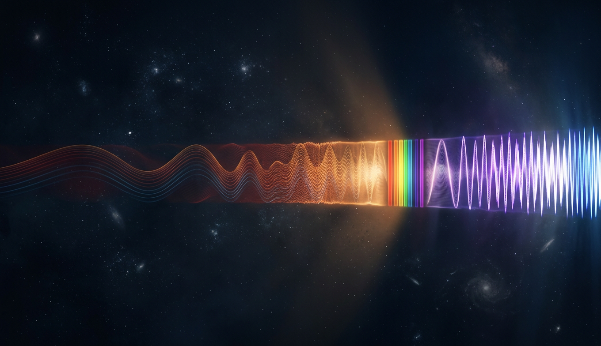
Радуга Ньютона - крошечный кусок полосы, которая тянется от радиоволн длиной в километры до гамма-квантов короче ядра атома. Мы видим из неё меньше процента. Всё остальное - тот же свет, только глаз для него не вырос.
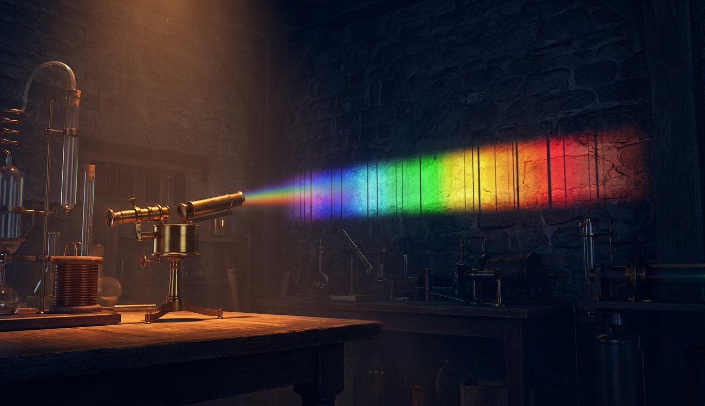
Философ написал, что мы никогда не узнаем, из чего сделаны звёзды. Через 24 года два химика прочли состав Солнца по тёмным чёрточкам в его свете. Гелий нашли на Солнце раньше, чем на Земле. Вся астрофизика с тех пор - чтение спектров.
Одна нота - это не одна частота. Это столб обертонов, и его состав - тембр. Фурье в 1822-м доказал, что любой звук раскладывается в такой столб. С тех пор на этом стоит запись музыки, узнавание речи, сжатие MP3 и Shazam.
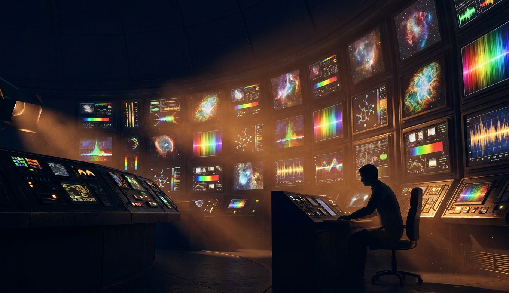
Масса молекул, звёзды по классам, радиочастоты как товар, который продают с аукциона. Спектр - это не про свет, это про способ мышления: разложить сложное на простое и посчитать, сколько какого. Где это работает, и где линейка врёт.
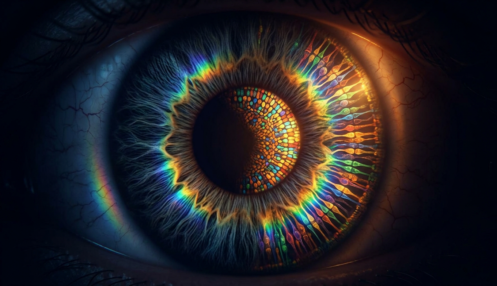
В свете есть длина волны. Цвета в нём нет. Три типа колбочек сжимают бесконечный спектр в три числа, а мозг из трёх чисел рисует всё, что мы называем цветом, включая один, которого в спектре нет вообще. Птицы, пчёлы и креветки живут в других мирах на том же свете.
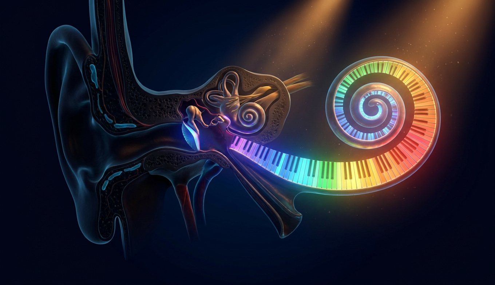
Улитка внутреннего уха - это спектроанализатор, свёрнутый в спираль: у входа ловятся высокие частоты, в глубине низкие. От 20 до 20 000 герц, и верхний край уезжает с каждым годом жизни. Собаки, слоны и летучие мыши слышат в тех же воздухе и воде совсем другую музыку.
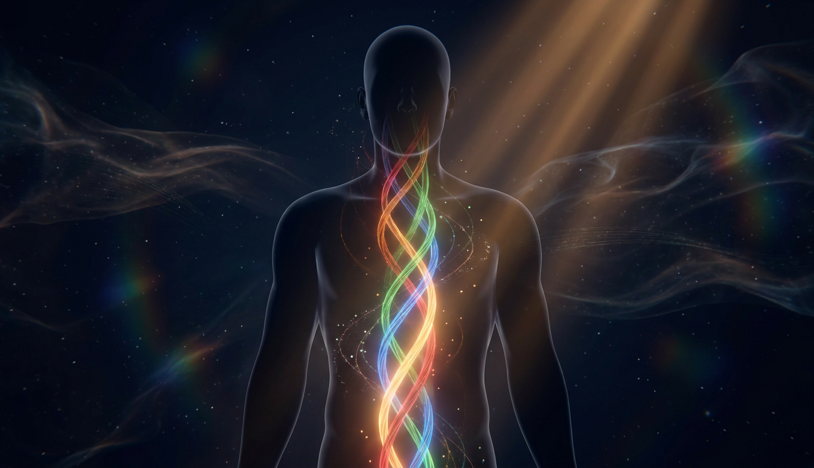
Пять вкусов, которых на самом деле бесконечно. Шкала боли от нуля до десяти, которой нельзя верить. Рецептора «тепло» не существует, есть два других и их разница. И люди, у которых спектры протекают друг в друга: буквы имеют цвет, а звуки - форму.
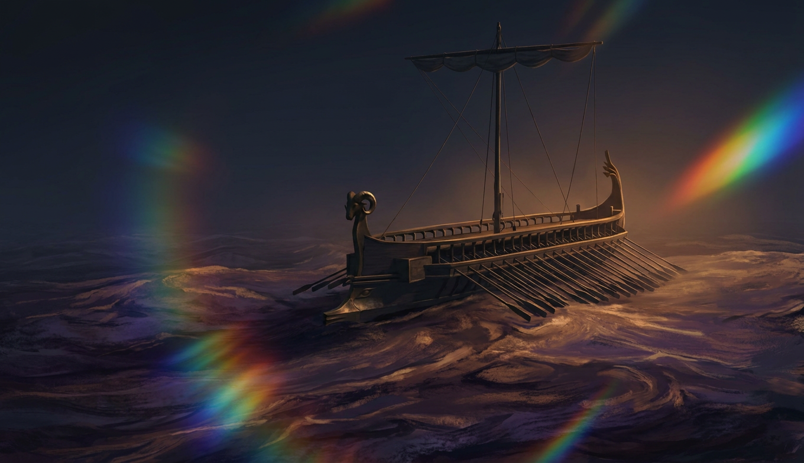
«Винноцветное море», «фиалковые овцы», «зелёный мёд». Гомер называл цвета так, что учёные XIX века решили, что греки были дальтониками. Не были. У них просто не было слова. Где язык проводит границу, там глаз начинает её видеть.
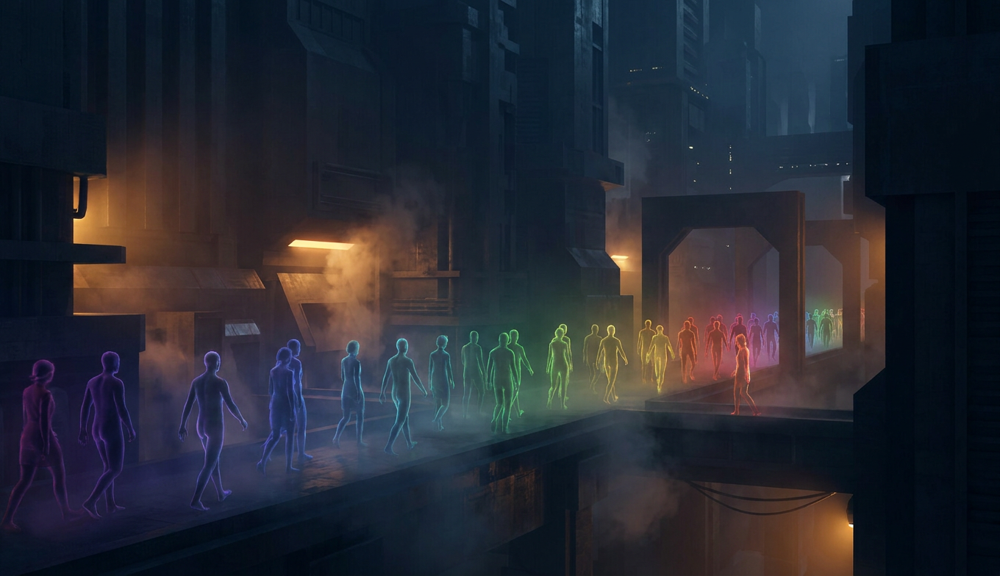
Аутизм стал спектром в 2013 году одним росчерком. СДВГ, дислексия, диспраксия - тоже. Мост из прошлой лекции: там граница между нормой и диагнозом была нарисована в книге. Здесь вопрос, есть ли она вообще, и что такое «нейротипичный», если каждый мозг разный.
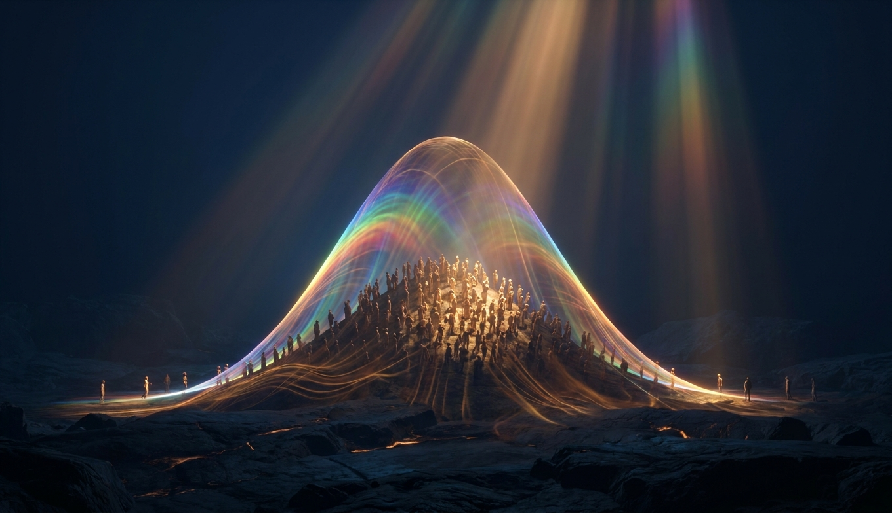
Интроверт или экстраверт, умный или глупый, лидер или исполнитель. Психология измеряет это семьдесят лет и каждый раз получает одно и то же: колокол без разрыва посередине. Типов личности не существует. Существуют шкалы, и большинство людей стоит около середины каждой.
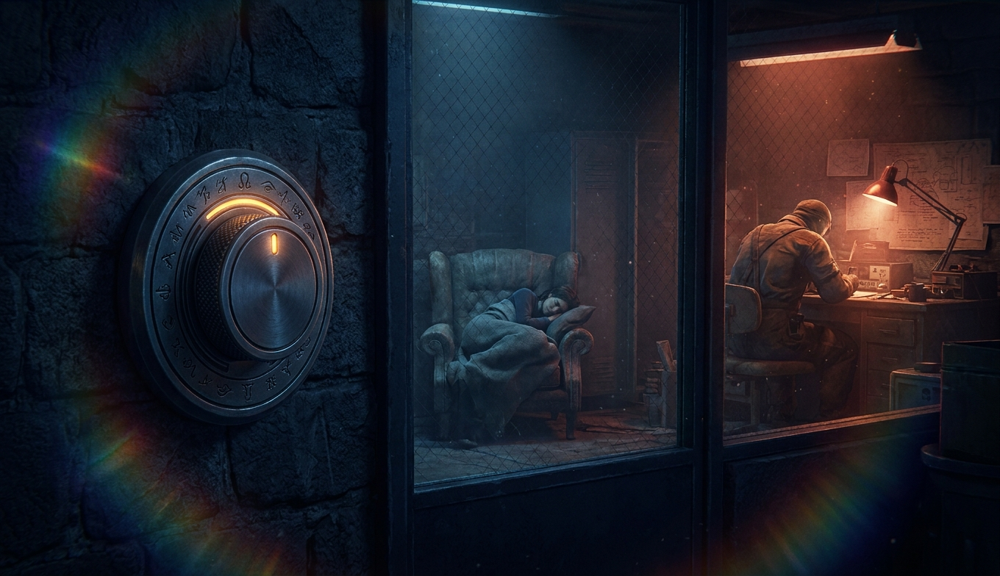
Спишь или бодрствуешь, в сознании или нет, левый или правый. Всё, что мы считаем переключателем, при ближайшем рассмотрении оказывается ручкой громкости с бесконечным числом положений. Кроме одного случая, но о нём в последней главе.
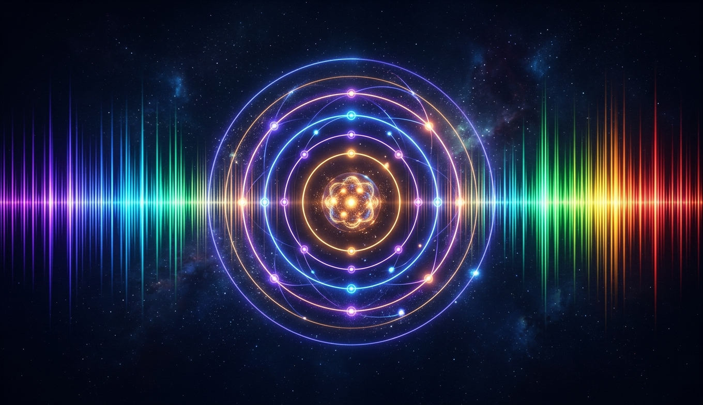
Одиннадцать глав границы рисовали мы: глаз, язык, книга, рассадка в парламенте. Осталось найти хоть одну, которую нарисовала природа. Есть несколько, и главная из них - в тех самых линиях, по которым читали состав звёзд. Спектр атома дискретен. Лейбниц ошибался.
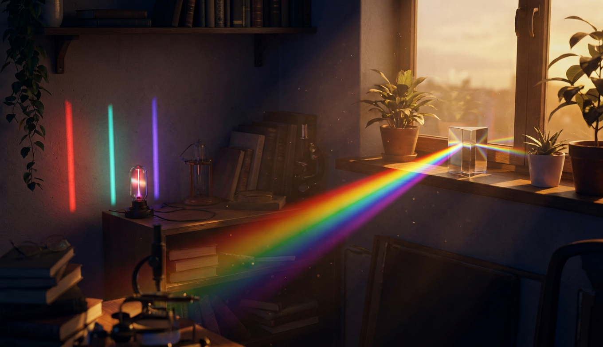
Что измерено, что выведено, что не знаем. Вопрос, на который лекция не отвечает. И латинская аксиома, которой триста лет и которая в этой лекции разбилась об атом.
Радуга без границ, звёзды, прочитанные по чёрточкам, нота, которая на самом деле аккорд. Цвет, которого нет в свете, синий, которого не было у Гомера, тип личности, которого нет ни у кого. Одиннадцать глав границы рисовали мы, и природа была плавной.